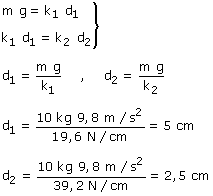

En la posición de equilibrio el bloque está
sometido al peso que tira hacia abajo y a la fuerza elástica
del muelle 2 (Fe2) que tira hacia arriba. Ambas fuerzas
se compensan
Por acción y reacción, el bloque tira del muelle
2 hacia abajo con la misma fuerza que tira el muelle 2 del bloque
hacia arriba (Fe2). El muelle 1 tira del muelle 2 hacia
arriba (Fe2). Las dos fuerzas sobre el muelle 2 se compensan

|